| Дерев’яний паркан, дерев'яна огорожа. Чернівці. |
|
Дерев’яний паркан / огорожа. Чернівці.
Незважаючи на різноманітність сучасних будівельних матеріалів дерево – класика, яка пройшла перевірку часом. Сьогодні вважається престижним прикрашати свій будинок дерев'яними декоративними елементами, або ж взагалі замахнутися на грандіозний проект, побудувати красивий дерев'яний ”еко”- будинок. Любителі всього натурального, як правило, віддають перевагу дерев'яним вікнам і дверям, а справжні дерев’яні меблі тільки доповнять їхню ідентичність.
У статті “Дерев’яний паркан / огорожа. Чернівці.” ми пропонуємо вашій увазі огляд сучасних парканів з дошки і практичні рекомендації по їх виготовленню. Сподіваємося, що після знайомства з представленими варіантами ви зміните свою думку і побудуєте красивий і практичний дерев’яний паркан на власній присадибній ділянці своїми руками.
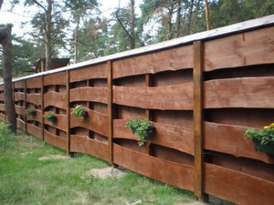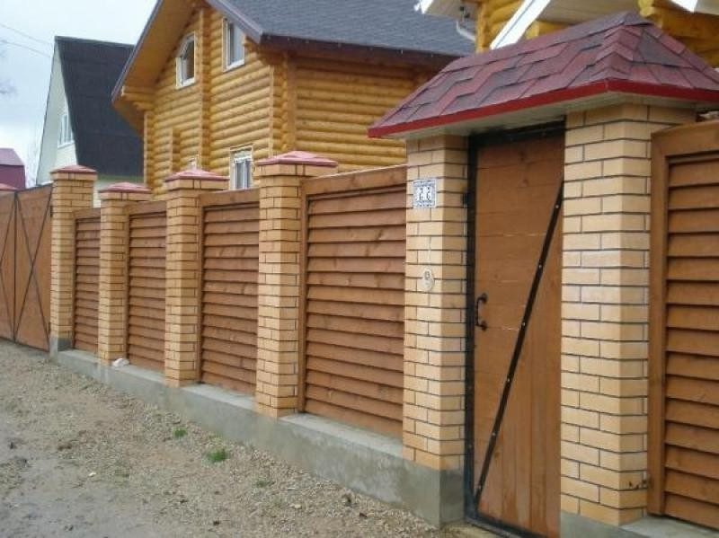
Попит на дерев’яний паркан(дерев’яну огорожу) завжди залишається високим. Власники заміських ділянок нерідко зупиняють свій вибір на дерев’яних огорожах, оскільки ті володіють рядом незаперечних переваг:
· натуральність. Дерево – екологічний природний матеріал, що володіє унікальним кольором і структурою.
· естетичні якості. Красивий дерев’яний паркан(дерев’яна огорожа) ідеально доповнюють будь-який архітектурний ансамбль в Чернівцях.
· невисока вартість. У порівнянні з іншими видами огорож, тими ж цегляними або залізобетонними, дерев’яний паркан(дерев’яна огорожа) коштуює на порядок дешевше. Тим паче, що Чернівці має власні потужності пиломатеріалів.
· простота зведення. Монтаж дерев’яних огороджувальних конструкцій не передбачає особливих знань, умінь і навичок. Побудувати дерев’яний паркан (дерев’яну огорожу) під силу навіть одній людині.
· різноманітність варіантів. Матеріалом, для виготовлення надійної і красивої огорожі можуть виступати будь-які породи дерева: дуб, бук, сосна, ясен, модрина.
Серед недоліків дерев’яних декоративних огорож можна відзначити лише відносно нетривалий термін служби, який коливається в діапазоні 8-10 років. Визначальними факторами терміну служби огорожі є особливості ґрунту і клімату. Паркан приходить в непридатність в результаті гниття деревини під дією погодних умов, надлишку вологи і ураження шкідливими комахами. Продовжити термін служби можна шляхом обробки поверхні антисептичними і захисними засобами.
Варіанти парканів з дощок
Для того, щоб встановити дерев’яний паркан не потрібно напружувати фантазію. Десятки цікавих різновидів огорож вже побудовані і відображені на фото. Найпростіший варіант – горизонтальний паркан з дошки. Його вартість мінімальна, а естетичні якості високі. Перед встановленням, горбилі потрібно відщліфувати, тонувати випалюванням і покрити лаком. В іншому випадку його зовнішній вигляд викликатиме асоціації з вигоном для худоби.
Ще одна порада. Дерев’яний паркан з необрізної дошки ідеально виглядає з дерев’яними будівлями.
У розглянутій конструкції прогони з дощок зафіксовані між двома дерев’яними стовпчиками. Від дощу торці стійок захищає похила планка. Найвразливіше місце – контакт дерева і бетону вимагає якісної ізоляції. Тут потрібно використовувати сучасні просочення-антисептики або глину з гарячим бітумом.
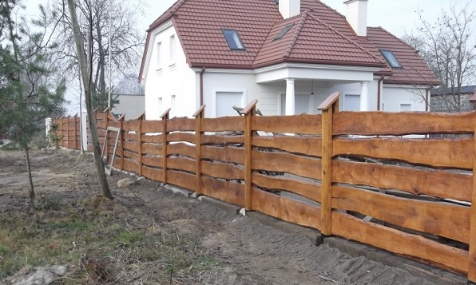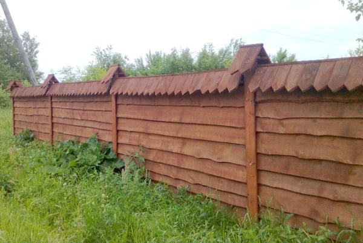
Дуже красиво в огорожі виглядає горбиль, очищений від кори і встановлений внахлест. Він прибивається до дерев’яних стовпів. Спереду стик прикриває дошка. Простий у виготовленні навіс з дощечок надає конструкції завершеності.
Ще один цікавий варіант – “штучний” горбиль. В цьому випадку краї дощок обрізають так, щоб вони утворювали симетричний малюнок.
Для створення кольорового контрасту дерев’яні накладки на стовпах оброблені темною морилкою.
Метод “декоративного повороту” однаково прийнятний як для обапола, так і для обрізної дошки. В останньому випадку ми отримуємо естетичний паркан-жалюзі. При прямому погляді він виглядає глухим. Однак, за рахунок проміжків між планками така конструкція не тільки добре вентилюється, але і частково пропускає сонячні промені.
Рослини люблять такі огорожі і швидко перетворюють їх на квітучі шпалери.
Принагідно зауважимо, що найкраща основа для кріплення дощок паркану – металеві стовпчики. Компромісний варіант – закладення в бетоні сталевих обойм з обрізків профільної труби. У них вставляють дерев’яні стійки і фіксують саморізами.
Трохи фантазії і непоказний горбиль-обапол перетворюється в дизайнерський штахетник. Стовпи для такої огорожі можна нарізати з дешевого кругляка-тонкоміра. Природна форма цього матеріалу ідеально впишеться в “кантрі дизайн”, обраний для даної огорожі.
Класичний штахетник (стругана дошка з заокругленим краєм) залишається актуальним елементом забірної конструкції. Єдина умова – не фарбуйте його зеленою або коричневою фарбою. Краще обробіть планки антисептиком і пару разів покрийте хорошим лаком. Деревина після цього заграє золотистими відтінками і простоїть на 10 років довше.
Якщо ж вам більше подобається тонована деревина, то використовуйте для цієї мети темно-коричневу фарбу. Вона надійно захистить штахетник від вологості і додасть йому благородного вигляду.
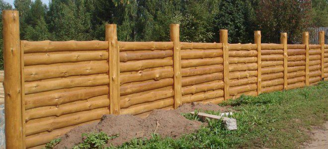
Глухий паркан з обрізної дошки виглядає краще, коли вертикальні планки встановлені не з одного, а з двох сторін внахлест. Така схема монтажу створює ритмічну ступінчасту структуру. Торці дощок зверху прикривають струганою планкою. Декоративний пояс обрамлення монтують і в нижній частині огорожі.
Глухий паркан не буде виглядати нудним, якщо в його конструктивну схему впроваджені арочні решітки з тонкої планки.
Арочні вставки-решітки усувають монотонність глухого паркану.
Вибираючи матеріал для огорожі, зверніть увагу на терасну дошку. Вона міцна, виразна і довговічна. Кріплять її до металевих стовпчиків, встановлених в бетонному фундаменті.
Для підвищення жорсткості в середній частині прольотів стоять вертикальні бруски.
Такий паркан не назвеш дешевим, але він дуже довговічний і красивий. Терасна дошка виготовляється з кольорового деревно-полімерного композиту і не потребує фарбування.
У даній конструкції дошку можна комбінувати з брусом. Нижче ми бачимо варіант огорожі, в якому брус встановлений зовні, а дошка прибита зсередини. Її стики не помітні, оскільки їх прикриває брус. Коричневе тонування деревини на контрасті з білим цоколем надає конструкції солідний і добротний вигляд.
З фасаду цей паркан зроблений суцільним. На бічній стороні огорожі в нижній частині дошки немає. Таке рішення прийнято для поліпшення вентиляції ділянки.
Далеко Україна від Америки, але романтика ковбойських ранчо дісталася і до нас. На просторій ділянці в Чернівцях, віддаленій від інших будівель, відмінно виглядає невисокий дерев’яний паркан в стилі кантрі. Його основа – товсті дерев’яні стовпи, до яких з одного боку горизонтально прибивають три пояси з дощок. У верхній частині дерев’яну планку пускають хрестоподібно, закриваючи відкриті “вікна” секцій.
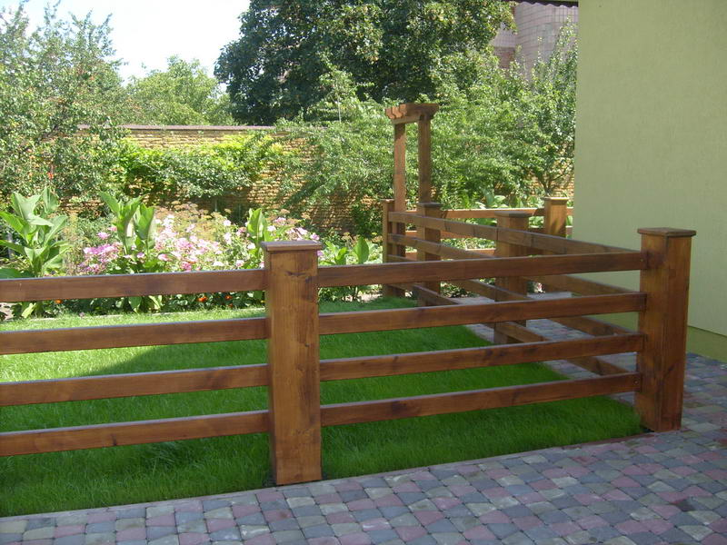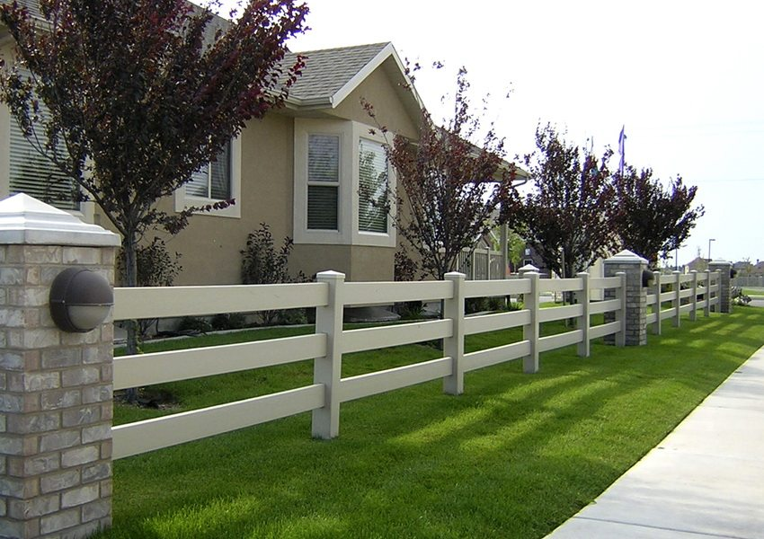 Плетені паркани з дошки.
Якщо хтось скаже вам, що з дошки можна плести паркани, не сумнівайтеся. Сьогодні, плетений дерев’яний паркан в Чернівцях – це наймодніша тема. Виглядає плетений тин з дощок чудово, а варіантів його монтажу існує чимало.
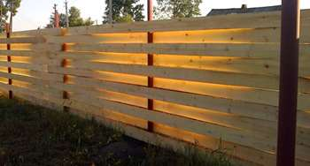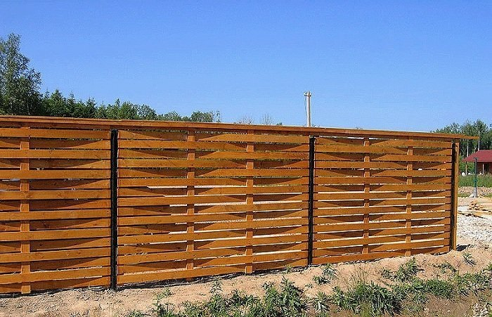
Дошка для плетеної огорожі повинна бути не дуже товстою. Тому, купивши на складі обрізну “тридцятку”, можете сміливо простругати її з обох сторін до товщини в 25 мм. Оптимальна ширина планки від 8 до 10 см.
Найпростіший варіант такої огорожі нагадує стінку літньої альтанки. По контуру для контрасту можна прибити обрамлення з темної дошки. Дерев’яна стійка паркану бетонується в ґрунті.
А ось інший, не менш цікавий варіант плетеної дерев’яної огорожі.
Тут тонка стругана дошка товщиною 25 мм і довжиною 2,5 метра в шахматному порядку кріпиться до стовпів. Вигин їй надає оригінальний спосіб монтажу: кінці дощок по черзі кріплять по одну і по іншу сторону дерев’яної стійки. У середній частині прольоту вертикальна рейка, яка фіксує вигин. Місця кріплення дощок до стійок прикриті планками.
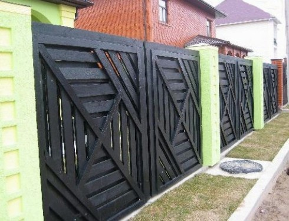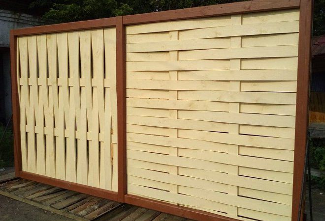
Нітрохи не гірше виглядає вертикальне плетіння з дощок. У цьому випадку відповідь на питання яку дошку краще використовувати для огорожі, очевидна: на довжині в 2 метра найлегше загинається планка, товщиною не більше 16 мм і шириною 8 см.
Плетений тин можна поліпшити, комбінуючи його із штахетником.
Подібна конструкція досить складна в монтажі, але її мальовничий зовнішній вигляд виправдовує всі витрачені зусилля. І разом з цим, Ваш ландшафтний дизайн виглядатиме ще витонченіше.
Оригінальний варіант огорожі, що поєднує плетіння з дощок з двостороннім монтажем паркану.
Бажаючим побудувати ексклюзивний дерев’яний паркан в Чернівцях, або замовити дерев’януогорожу необхідно звернутися до досвідченого майстра: Чернівці +380509126841, +380970165646.
Кожна дошка для такої огорожі вирізається окремо, на основі шаблону секції. На її торцях і бічних гранях нарізають з’єднувальні шипи, якими дошки за принципом пазлів з’єднують між собою, кріплять до стовпів і до нижнього поясу.
Практичні рекомендації по монтажу паркану з дощок.
Поради, які ми дали у статті “Дерев’яний паркан / огорожа. Чернівці.”, слід доповнити параметрами основних елементів огорожі з дошки:
- розмір поперечного перерізу дерев’яних стовпів – 10х10 см.
- у разі використання для стійок сталевого профілю його переріз повинен бути не менше, ніж 40х40 мм (стінка 2 мм). - горизонтальні поперечини (прогони) повинні мати переріз не менше, ніж 30х50 мм при кроці стійок 2 метри. - для зручності монтажу дерев’яних прогонів, до сталевих стійок потрібно приварити кріпильні пластини “вуха” з висверленими в них отворами під саморізи.
На стадії закупівлі матеріалів виникає питання, як вирахувати, скільки дощок потрібно на паркан. Вирішується це просто. Якщо огорожа суцільна, то її загальну довжину потрібно помножити на висоту і товщину дошки яку купуєте.
Ще один важливий момент – чим пофарбувати паркан з дощок? Якщо заощадити на якості фарби, то огорожу доведеться частіше оновлювати. Тому рекомендуємо купувати дорогу фарбу для зовнішніх робіт. Перед її нанесенням обробіть дошку гарячою оліфою або антисептичним просоченням. Витрата фарби і просочення буде мінімальним при нанесенні їх на стругану дошку. Врахуйте цей нюанс при виборі матеріалу.
З огляду на велику площу дощатої огорожі, фарбувати її потрібно валиком або фарбопультом. Пропуски, допущені під час роботи, виправляються малярської пензлем.
Отже, хочете побудувати дерев’яний паркан в Чернівцях? Або змонтувати дерев’яну огорожу? Чи замовити матеріали, а дерев’яний паркан/огорожу зробити самі? Не питання, звертайтесь до наших фахівців: Чернівці +380509126841, +380970165646.
|